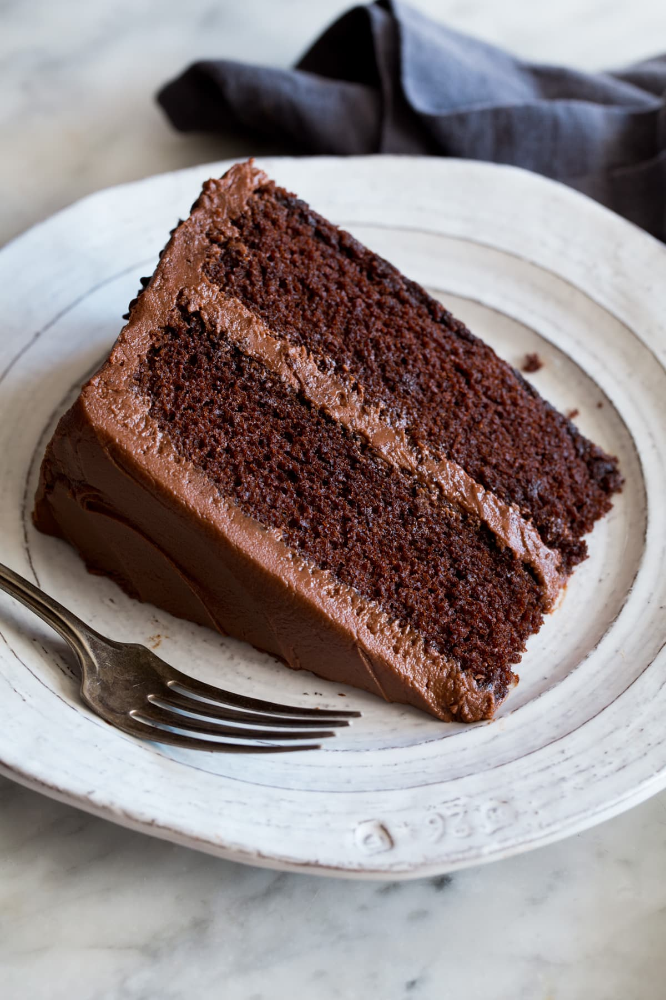

Chocolate cake

Ingredients
- 200g butter
- 1 cup white sugar
- 1 cup brown sugar
- tsp vanilla essence
- 3 cups flour
- pinch of salt
- 1 tsp baking powder
- 2 cups cocolate chips
Method
- Preheat oven to 180℃ bake and grease or line two
large baking trays with baking paper.
- Melt Butter, then add White Sugar and Soft Brown Sugar and cream these together.
Beat in the eggs and vanilla then use a spoon or spatula to mix in the dry ingredients.
- Roll into medium sized balls and place on prepared trays.
- Bake for 10-12 minutes
Blue Berry Muffins

Ingredients
- 1 1/2 cups all-purpose flour
- 3/4 cup granulated sugar
- 1/4 teaspoon fine sea salt
- 2 teaspoons baking powder
- 1/3 cup vegetable oil
- 1 large egg
- 1/3 milk
- 1 1/2 teaspoons vanilla extract
- 1 cup fresh or frozen blueberries
Method
- Whisk the flour, sugar, baking powder, and salt in a large bowl.
- Add oil to a measuring jug that holds at least 1 cup. Add the egg
then fill the jug to the 1-cup line with milk
Add vanilla and whisk to combine.
- Add milk mixture to the bowl with dry ingredients then use a fork to combine.
Do not over mix. Fold in the blueberries.
Black Forest Slice

Ingredients
- 250g plain biscuits(crushed)
- 200g sweetened condensed milk
- 120g butter
- 250g blackforest chocolate
Icing
- 250g milk chocolate
- 70g cream
Method
- crush biscuits into a fine crumb.
- melt butter, chocolate and condenced milk over low heat.
- combine chocolate mix and bisciuts and press into lined tin.
- refrigerate and ice once chilled.